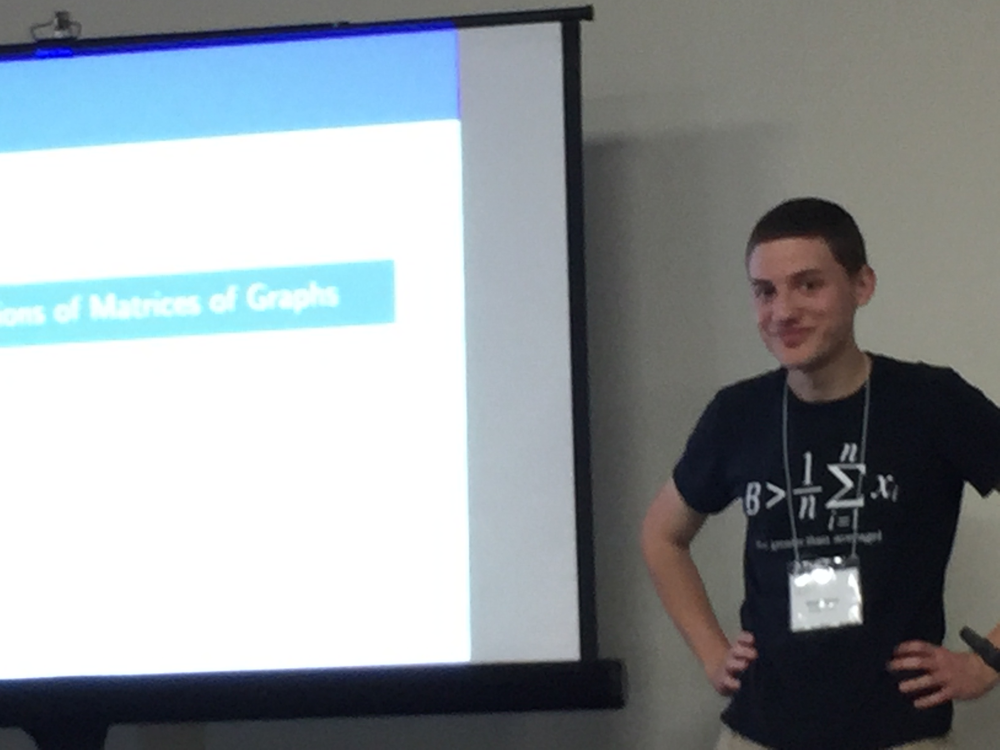

Talks

Here are slides and videos of various talks I've given. All of my videos are included in this playlist. Note that many of the videos are dry runs of talks, which is why I will not pause when asking for questions and why no one laughs at any of my jokes.
Research Talks
- New Eigenvalue Bound for the Fractional Chromatic Number. Slides. Video.
- The Random Turan Problem. Slides.
- Zero Forcing with Random Sets. Slides.
- Semi-restricted Rock, Paper, Scissors. Slides. Video.
- Some Sunflower Stuff/Smoother Spread Set Systems. Slides.
- Maximal Independent Sets in Clique-free Graphs. Slides (short version). Video.
- Cycle-free Subgraphs of Random Hypergraphs. Slides.
- Theorems Featuring Facts of FFT Tables of Full Frequency. Slides. Video.
- Card Guessing with Partial Feedback. Slides. Video. Short Video.
- Relative Turan Numbers of Hypergraphs. Slides. Video.
- Triangle-Free Hypergraphs. Slides.
- Odd Cycle Saturation Games. Slides.
- Slow Fibonacci Walks. Slides. Video.
- Ballot Permutations and Odd Order Permutations. Slides.
- Polynomial Relations of Matrices of Graphs. New, Original.
- Forbidden Configurations and Forbidden Families. Slides.
Other Talks
- The Count of Monte Carlo. Slides. Video.
- Some Selected Picks from Extremal Combinatorics. Slides. Video (just the rap).
- An Introduction to Hypergraph Containers. Slides. Video.
- An Introduction To Spectral Graph Theory. Slides. Video.
- Super Saiyan Permutations. Slides.